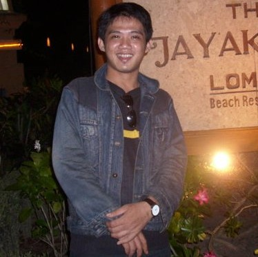

Sariyanto

Summary
I have been in the field of distribution, logistics, procurement and
warehousing for almost thirteen years. started in 2005 while studying I
became a spare parts shop employee who took care of all kinds of store
needs, ranging from shopping for stock items until arranging deposits from
sales. in 2009 through PT. Binayasa Karya Pratama, I had the opportunity
to be a staff support for the logistics division of PT. Bank BTN
Headquarters, here I know procurement of goods and services more broadly,
ranging from building procurement until car drivers for management officer
supply and household services.
In 2011 I moved to PT. Tirta Amarta, here I started to know in detail
about warehousing, distribution and logistics. started as a warehouse
staff for 2 years and became a warehouse supervisor until 2018. despite
years of working in the logistics field, I also have an interest and
attention in the world of information technology, and sometimes i get
sidejob for web programming.
Education
-
Bachelor of Computer Science, Information Engineering - Nusamandiri
University Jakarta (2014-2015).
-
Diploma, Computer Engineering - Bina Sarana Informatika University
Jakarta, (2002 - 2007)
Work Experience
-
Logistic & warehouse supervisor - PT. Tirta Amarta
Jan 2014 - Aug 2018
-
Supporting Logistic & Warehouse Manager to ensure the availability
of goods for our branch, accept finished goods request, and make
schedule for delivery based on their request
-
Reporting distributions of Finished goods, maintenance and reporting
good supply & distribution activities to Logistic & Warehouse
Manager
- Supervising Logistic & Warehouse Admin Staff.
-
Logistic & warehouse Staff - PT. Tirta Amarta
Jun 2011 - Dec 2013
-
Make a daily purchase receipt based on Purchase Order from
Purchasing Department and make monthly receiving recapitulation for
finance & Accounting Department.
-
Manage warehouse daily activity document, controlling Inventory
Activity to ensure available stock in warehouse floor is balanced
with Inventory System
-
Outsource Staff for Logistic and Network Division - PT. Bank BTN
(persero) Tbk
May 2009 - May 2011
-
make a number registration and manage bill instruction letter
document, help Logistic and network division staff to verification
purchasing document, and verification an account would be use on
payment to supplier.
Skill
- Problem Solving Skill ⭐️⭐️⭐️⭐️
- Analitycal Skill⭐️⭐️⭐️⭐️
- Organization Skill⭐️⭐️⭐️⭐️⭐️
- Warehouse management System⭐️⭐️⭐️⭐️⭐️
- Web Development⭐️⭐️⭐️
- Android Development⭐️⭐️⭐️
Awards & Certification
Other